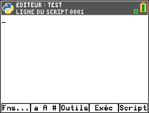
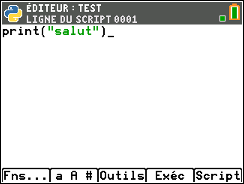

Introduction
Bienvenue sur mon site web ! Aujourd'hui je vais vous apprendre le langage Python (les bases). Le site se présente sous plusieurs chapitres que vous pouvez sélectionner dans le menu en haut à droite de la page, il y a des exercices qui sont notés et ensuite vérifiés (avec un système alléatoire), et quelques infos sur le créateur. Le site est en développement, si vous avez rencontré des erreurs, si vous avez des suggestions, n'hesitez pas à m'en informer. Mais avant de commencer, il est préférable que vous possédez une calculatrice TI-83 Édition Python, si vous n'en possedez pas et que vous souhaitez quand même suivre ce tuto, je vous conseille d'ignorer le premier chapitre intitulé « Créer un programme » le reste du site pourrait bien vous aider sur n'importe quelle platforme, commençons ! :D
›
Créer un script
Pour commencer, allumons notre calculatrice et appuyons sur le bouton prgm. Deux options s’offrent à nous, soit TI-Basic ou soit Python App. Nous allons choisir la deuxième option, Python App avec les flèches directionnelles, puis appuyons sur entrer (ou sur 2). Une fois le chargement terminé, voici comment se présente l’interface.
En bas de l’écran se trouvent plusieurs paramètres, voici à quoi elles servent:
« Exéc » sert à exécuter un script (pour l’instant on n’en a aucun).
« Édit » permet de modifier un script.
« Nouv » permet de créer un nouveau script.
« Shell » c’est ici que nos scripts vont être exécutés.
« Gérer » permet de dupliquer, supprimer, renommer nos scripts.
Pour accéder à chacun de ces paramètres, il faut appuyer sur les boutons qui se situent tout en haut de la calculatrice. Appuyons sur le bouton zoom pour créer un nouveau script, on va ensuite écrire comme nom de script « TEST ». Appuyons sur entrer, et voici comment se présente l’éditeur.

Dans ce tuto, nous allons seulement nous préoccuper des paramètres « Exéc » et « Script ». Maintenant réalisons notre première ligne de commande pour voir si tout fonctionne bien ! Écrivons ceci.

Pour écrire en lettre c’est simple, regardez en haut à droite de votre écran, lorsque vous appuyez sur la touche alpha, une lettre en minuscule s’affiche, vous pouvez désormais écrire en lettre minuscule, si vous appuyez de nouveau, les lettres seront en majuscule. Et pour écrire des chiffres/caractères spéciaux appuyez sur alpha. La commande print() va nous permettre d’afficher le mot « salut » dans le Shell (l’endroit où notre script est exécuté et affiché, qu’on va voir juste après). Maintenant nous allons exécuter le script, appuyons sur le bouton trace et voilà ce qui s’affiche:
Ça veut dire que le programme fonctionne ! Ça a bien affiché « salut » ! Bravo à vous ! Vous avez réalisé le plus dur dans tout ce tuto ! Nous allons revenir à notre éditeur de programme, appuyez de nouveau sur trace. Continuons !
›
Les variables
Qu’est ce qu’une variable ? Une variable c’est tout simplement une valeur que l’on va stocker dans un endroit spécifique. Voici la recette ➤ Nom_Variable=Valeur
Voici un exemple d'une variable:
voiture=4
print(voiture)
Lorsqu'on exécute le programme, ça nous affiche bien 4 ! La variable voiture est donc égal à 4. Maintenant voici un autre exemple avec plus de variables.
voiture=4
scooter=3
vehicules=voiture+scooter
print(vehicules)
Si on exécute le programme, on obtient la valeur 7. Donc d'après ce programme, la variable voiture est égal à 4 - la variable scooter est égal à 3 - la variable vehicules est égal à 4 (la voiture) + 3 (le scooter) ce qui nous donne 4+3=7 ! Alors c'est simple non ? Allez passons au exercice ! :D
›
 ›
›
 En bas de l’écran se trouvent plusieurs paramètres, voici à quoi elles servent:
En bas de l’écran se trouvent plusieurs paramètres, voici à quoi elles servent:
 Ça veut dire que le programme fonctionne ! Ça a bien affiché « salut » ! Bravo à vous ! Vous avez réalisé le plus dur dans tout ce tuto ! Nous allons revenir à notre éditeur de programme, appuyez de nouveau sur trace. Continuons !
Ça veut dire que le programme fonctionne ! Ça a bien affiché « salut » ! Bravo à vous ! Vous avez réalisé le plus dur dans tout ce tuto ! Nous allons revenir à notre éditeur de programme, appuyez de nouveau sur trace. Continuons !